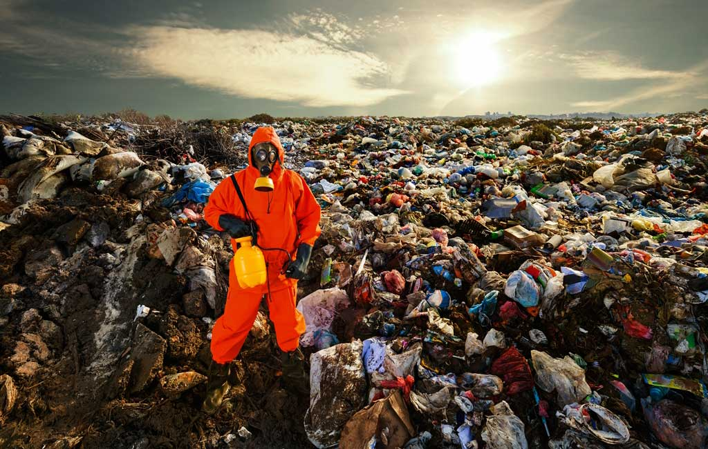

land pollution, the deposition of solid or liquid waste materials on land or underground in a manner that can contaminate the soil and groundwater, threaten public health, and cause unsightly conditions and nuisances.
The waste materials that cause land pollution are broadly classified as municipal solid waste (MSW, also called municipal refuse), construction and demolition (C&D) waste or debris, and hazardous waste. MSW includes nonhazardous garbage, rubbish, and trash from homes, institutions (e.g., schools), commercial establishments, and industrial facilities. Garbage contains moist and decomposable (biodegradable) food wastes (e.g., meat and vegetable scraps); rubbish comprises mostly dry materials such as paper, glass, textiles, and plastic objects; and trash includes bulky waste materials and objects that are not collected routinely for disposal (e.g., discarded mattresses, appliances, pieces of furniture). C&D waste (or debris) includes wood and metal objects, wallboard, concrete rubble, asphalt, and other inert materials produced when structures are built, renovated, or demolished. Hazardous wastes include harmful and dangerous substances generated primarily as liquids but also as solids, sludges, or gases by various chemical manufacturing companies, petroleum refineries, paper mills, smelters, machine shops, dry cleaners, automobile repair shops, and many other industries or commercial facilities. In addition to improper disposal of MSW, C&D waste, and hazardous waste, contaminated effluent from subsurface sewage disposal (e.g., from septic tanks) can also be a cause of land pollution.
The permeability of soil formations underlying a waste-disposal site is of great importance with regard to land pollution. The greater the permeability, the greater the risks from land pollution.Soil consists of a mixture of unconsolidated mineral and rock fragments (gravel, sand, silt, and clay) formed from natural weathering processes. Gravel and sand formations are porous and permeable, allowing the free flow of water through the pores or spaces between the particles. Silt is much less permeable than sand or gravel, because of its small particle and pore sizes, while clay is virtually impermeable to the flow of water, because of its platelike shape and molecular forces.

Until the mid-20th century, solid wastes were generally collected and placed on top of the ground in uncontrolled “open dumps,” which often became breeding grounds for rats, mosquitoes, flies, and other disease carriers and were sources of unpleasant odours, windblown debris, and other nuisances. Dumps can contaminate groundwater as well as pollute nearby streams and lakes. A highly contaminated liquid called leachate is generated from decomposition of garbage and precipitation that infiltrates and percolates downward through the volume of waste material. When leachate reaches and mixes with groundwater or seeps into nearby bodies of surface water, public health and environmental quality are jeopardized. Methane, a poisonous and explosive gas that easily flows through soil, is an eventual by-product of the anaerobic (in the absence of oxygen) decomposition of putrescible solid waste material. Open dumping of solid waste is no longer allowed in many countries. Nevertheless, leachate and methane from old dumps continue to cause land pollution problems in some areas.